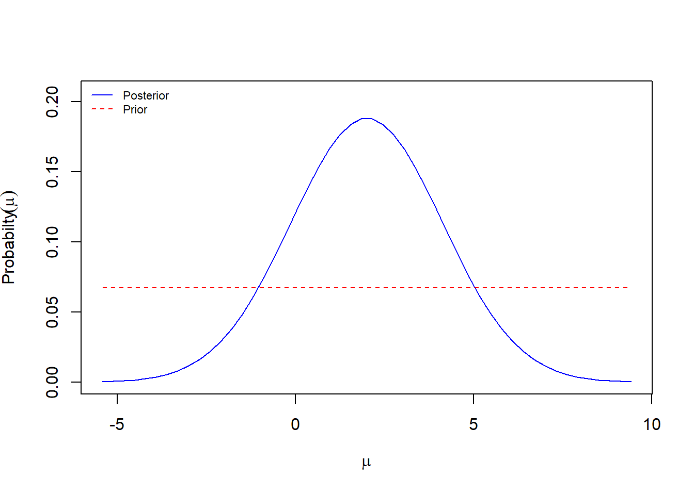
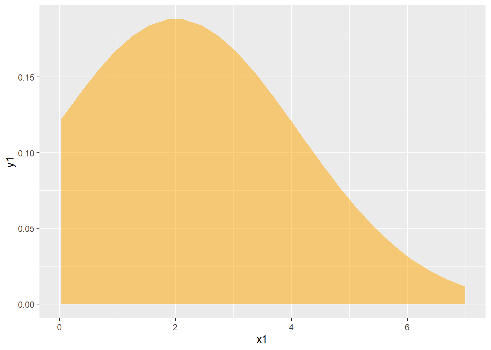
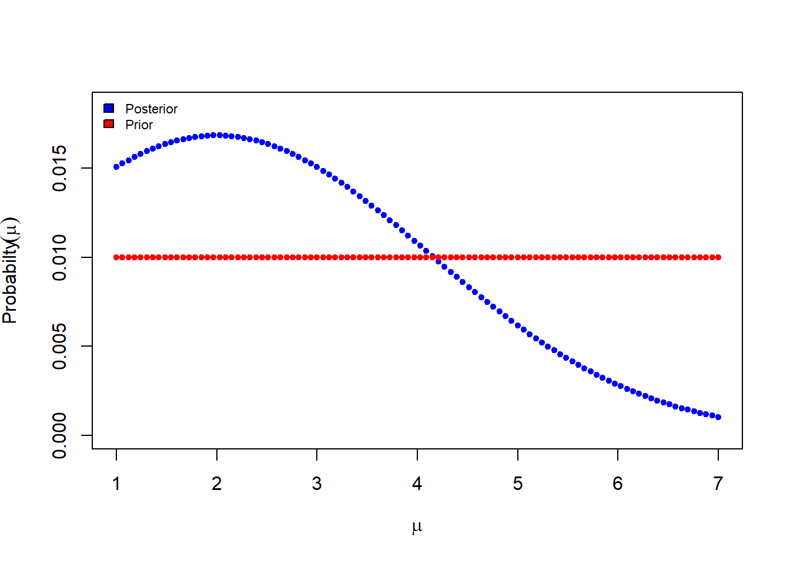
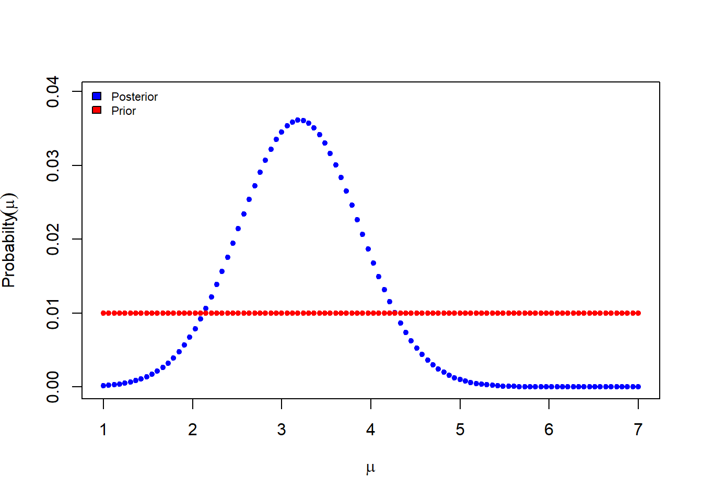
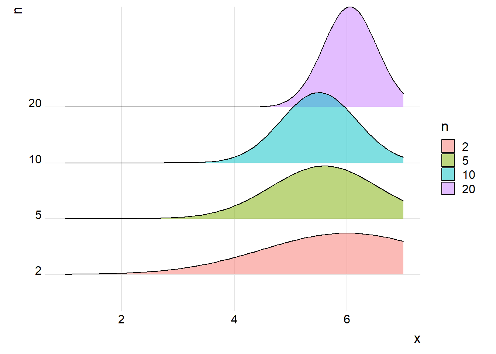
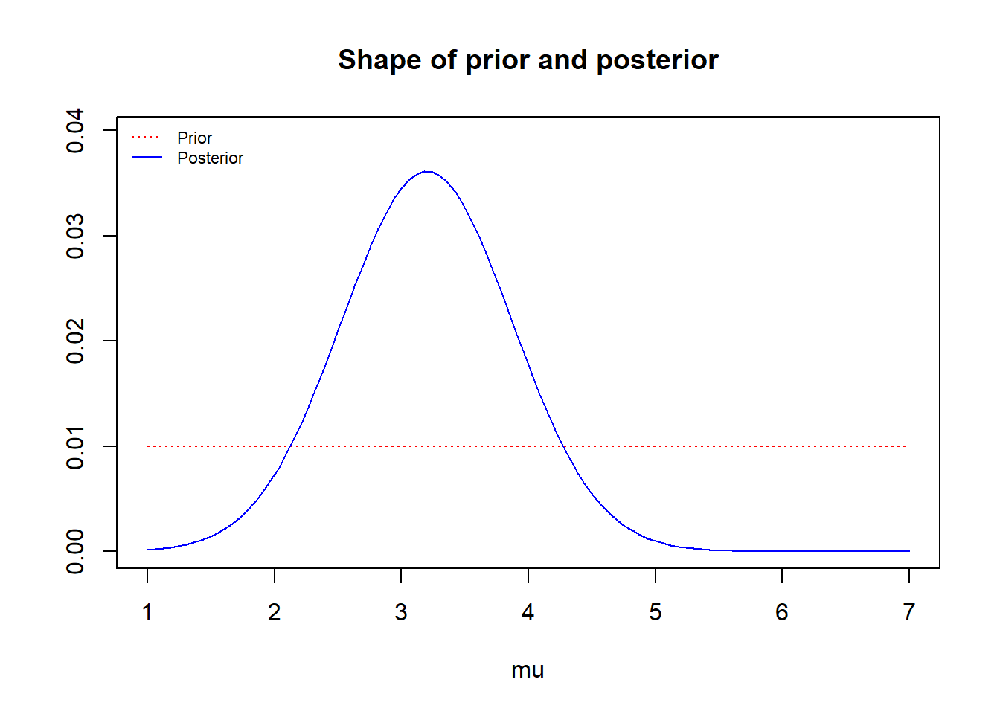
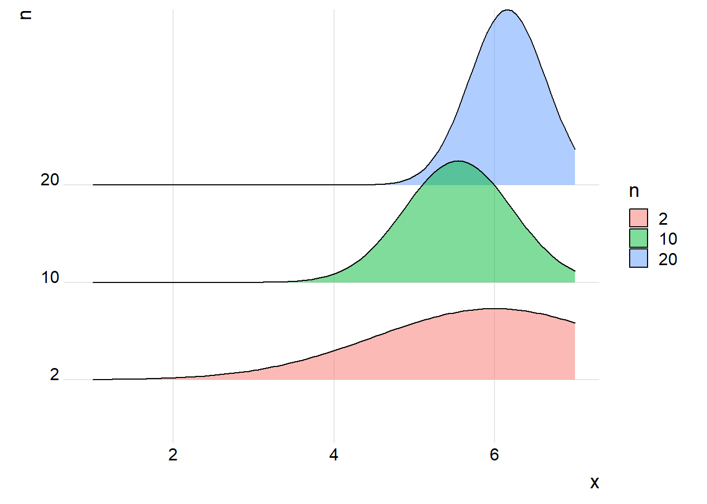

var <- seq(1,7, by=1) Bayesian inference
Mean of population
I want to test how I can get best estimates of the population means with a distribution around it to describe the uncertainty. If I just use the sample variance, then with very low sample sizes, like n = 1 or 2, I can get very low variance just by chance, making the estimates seem very robust, when in fact it is not.
Our variable is discrete, 1 to 7.
We have a national data set with thousands of samples (n > 1000). From this we want to get the mean for local regions (the data is georeferenced).
If I use bayesian inference over a uniform prior and using the st.dev. from the national data set (closer to the true st.dev. than the sub-population st.dev.), then perhaps I can get what I want?
I will use the Bolstad package for the inference.
library(Bolstad)
library(tidyverse)
library(ggridges)We want to estimate the mean of the population.
The probability density function for the mean (mu) will be normally distributed and truncated at 1 and 7.
Let’s generate some example population samples.
random1 <- 2
random2 <- c(sample(var, 2, replace = T))
random10 <- c(sample(var, 10, replace = T))
full <- c(sample(var, 1000, replace = T))Bolstad::normgcp assumes the samples comes from a normal distribution with a known st.dev.
I will take the st.dev from the entire national data set.
national.sd <- sd(full)We want to use a uniform prior.
Here’s the posterior distribution for mu when we have just n = 1
pd1 <- normgcp(x = random1,
sigma.x = national.sd,
density = "uniform",
n.mu = 50) # default Known standard deviation :2.119
The plot goes beyond the possible range of [1-7]. We can see this better if we extract the values manually and make our own plot.
x1 <- pd1[["param.x"]]
y1 <- pd1[["posterior"]]
df <- data.frame(x1, y1)
df |>
ggplot(aes(x = x1, y = y1))+
geom_area(fill="orange", alpha=.5)+
xlim(c(0,7))Warning: Removed 26 rows containing non-finite values (`stat_align()`).
We can perhaps trucate the posterior, like the figure above, or we could use a discrete prior
mu is actually not discrete, just the data are. But with this approach, mu is also discrete, but we can add many steps to make it core or less continous. I use 100 steps below.
mu <- seq(1, 7, length.out=100)pd2 <- normdp(x = random1,
sigma.x = national.sd,
mu = mu,
mu.prior = rep(1/length(mu), times=length(mu))) Known standard deviation :2.119
OK, but there is practically zero change of mu being 7. We only have one sample. Shouldn’t there be a wider spread of probabilities?
Actually, the probability that mu is 7 is calculated to be
min(pd2$posterior)[1] 0.001041136So not zero, but still very small. And if the st.dev is 2, then perhaps this is correct.
dnorm(7, mean=random1, sd=national.sd)[1] 0.01164318This is also a small number, although not identical. I’m not sure I understand the maths here.
Let’s try with n = 10.
pd10 <- normdp(x = random10,
sigma.x = national.sd,
n.mu = 50, # not having an effect
mu = mu,
mu.prior = rep(1/length(mu), times=length(mu)))Known standard deviation :2.119
Lets try some more realistic samples.
sampleHigh2 <- round(runif(2, 5,7))
sampleHigh5 <- round(runif(5, 5,7))
sampleHigh10 <- round(runif(10, 5,7))
sampleHigh20 <- round(runif(20, 5,7))pd_h2 <- normdp(x = sampleHigh2,
sigma.x = national.sd,
mu = mu,
mu.prior = rep(1/length(mu), times=length(mu)))pd_h5 <- normdp(x = sampleHigh5,
sigma.x = national.sd,
mu = mu,
mu.prior = rep(1/length(mu), times=length(mu)))pd_h10 <- normdp(x = sampleHigh10,
sigma.x = national.sd,
mu = mu,
mu.prior = rep(1/length(mu), times=length(mu)))pd_h20 <- normdp(x = sampleHigh20,
sigma.x = national.sd,
mu = mu,
mu.prior = rep(1/length(mu), times=length(mu)))data.frame(x = mu,
"n2" = pd_h2$posterior,
"n5" = pd_h5$posterior,
"n10" = pd_h10$posterior,
"n20" = pd_h20$posterior) |>
pivot_longer(!x,
names_to = "n") |>
mutate(n2 = str_remove(n, "n"),
n3 = as.numeric(n2),
n = fct_reorder(n2, n3)) |>
ggplot(aes(x = x,
y = n,
height = value,
fill = n))+
geom_density_ridges(alpha=.5,
stat = "identity")+
theme_ridges()
This is looking good so far.
Weighted mean
Now for the next bit. We actually need the weighted mean for the population.
Let’s use pd10 to compare against. pd10 used the random10 as the population sample.
plot(pd10)
We want to add weights to random10. Creating vectors of weights that down weigh the low numbers:
random10_w <- random10
random10_w2 <- random10^2I have custumised Bolstad::normdp to handle weighted means with a function called wgt_mean.
source("../bayes_weightedMean.R")dw1 <- wgt_mean(x = random10,
weights = random10_w, #notice new argument
sigma.x = national.sd,
mu = mu,
mu.prior = rep(1/length(mu), times=length(mu)))dw2 <- wgt_mean(x = random10,
weights = random10_w2,
sigma.x = national.sd,
mu = mu,
mu.prior = rep(1/length(mu), times=length(mu)))data.frame(x = mu,
"No_weights" = pd10$posterior,
"Proportional" = dw1$posterior,
"Exponential" = dw2$posterior) |>
pivot_longer(!x,
names_to = "Weights") |>
mutate(Weights = fct_relevel(Weights,
"No_weights",
"Proportional",
"Exponential")) |>
ggplot(aes(x = x,
y = Weights,
height = value,
fill = Weights))+
geom_density_ridges(alpha=.5,
stat = "identity")+
theme_ridges()
Our custom function has succesfully increased the weight on the high values in the sample.
How about if the sample size varies.
dw3 <- wgt_mean(x = sampleHigh2,
weights = sampleHigh2,
sigma.x = national.sd,
mu = mu,
mu.prior = rep(1/length(mu), times=length(mu)))dw4 <- wgt_mean(x = sampleHigh10,
weights = sampleHigh10,
sigma.x = national.sd,
mu = mu,
mu.prior = rep(1/length(mu), times=length(mu)))dw5 <- wgt_mean(x = sampleHigh20,
weights = sampleHigh20,
sigma.x = national.sd,
mu = mu,
mu.prior = rep(1/length(mu), times=length(mu)))data.frame(x = mu,
"n2" = dw3$posterior,
"n10" = dw4$posterior,
"n20" = dw5$posterior) |>
pivot_longer(!x,
names_to = "n") |>
mutate(n2 = str_remove(n, "n"),
n3 = as.numeric(n2),
n = fct_reorder(n2, n3)) |>
ggplot(aes(x = x,
y = n,
height = value,
fill = n))+
geom_density_ridges(alpha=.5,
stat = "identity")+
theme_ridges()
It works as predicted.